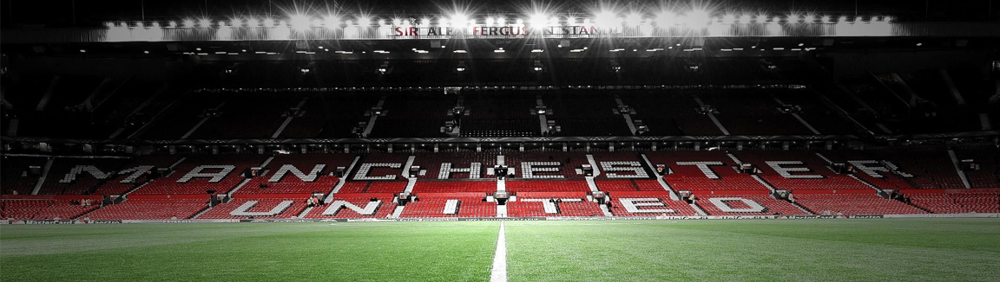

Old Trafford
Old Trafford: The Iconic Home of Manchester United
Old Trafford, the legendary stadium of Manchester United, holds a special place in the hearts of football fans worldwide. With its rich history, electric atmosphere, and storied traditions, it stands as a symbol of excellence, success, and unwavering support.
A Theatre of Dreams
Old Trafford has been the Theatre of Dreams for Manchester United since 1910. It has witnessed countless memorable matches, remarkable comebacks, and outstanding performances from some of the greatest footballers in history.
A Colosseum of Football
With a seating capacity of around 74,140 spectators, Old Trafford stands as one of the largest stadiums in England. The sheer size of the stadium creates an awe-inspiring atmosphere, providing an unforgettable experience for both players and fans.
Legends and Glorious Moments
Old Trafford has been graced by legendary players who have become icons of Manchester United. From Sir Bobby Charlton and George Best to Eric Cantona and Ryan Giggs, these footballing legends have left an indelible mark on the stadium and the club's rich history.
The Stretford End
The Stretford End, Old Trafford's famous stand, is renowned for its passionate and vocal supporters. The chants, cheers, and waves of red scarves create an atmosphere that fuels the players and resonates throughout the stadium, inspiring the team to greatness.
A Legacy of Success
Old Trafford has been witness to Manchester United's remarkable success. The stadium has seen the club lift numerous league titles, FA Cups, and European trophies, including historic nights in the UEFA Champions League that have etched the club's name in footballing folklore.
A Pilgrimage for Football Enthusiasts
Old Trafford is not just a stadium; it is a destination for football enthusiasts. A visit to the Manchester United Museum and Stadium Tour allows fans to immerse themselves in the club's history, explore the trophy room, and walk in the footsteps of their footballing heroes.
A Symbol of Pride
Old Trafford symbolizes the pride and identity of Manchester United. It represents the enduring spirit of the club, its unwavering support, and its commitment to excellence. For fans around the world, Old Trafford is more than a stadium; it is a symbol of their love for the club.
- Manchester - England.
- 74,140 Spectators.
- Second biggest Stadium in England.